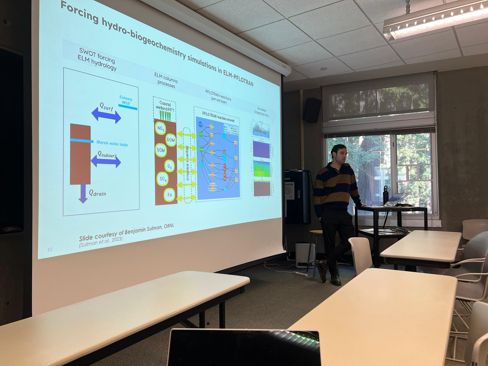

1 minute read
Today, ENVS 115/215B (Intermediate GIS) welcomed Dr. Etienne Fluet-Chouinard for an in-person guest lecture at the UCSC campus ISB. Dr. Fluet-Chouinard is an Earth Scientist at the Pacific Northwest National Laboratory (PNNL) and shared insights on global remote sensing of wetlands.
His talk highlighted how large-scale satellite observations and modeling can improve our understanding of wetland dynamics, carbon cycling, and climate impacts. Students engaged with examples of global datasets and methods for tracking wetland change across regions and time.

Thank you to Dr. Fluet-Chouinard for an engaging lecture and to our students for a thoughtful discussion.
Updated: February 3, 2026